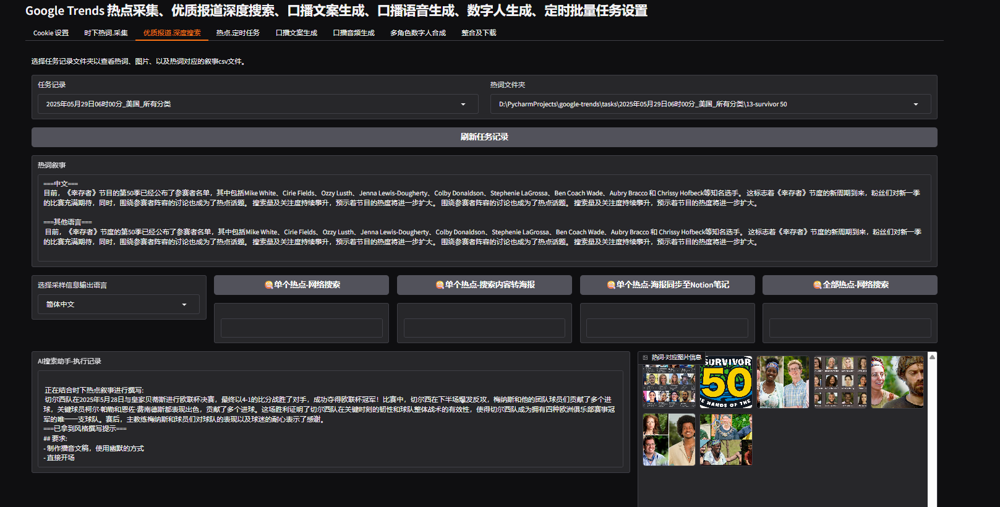

Google Trends 时下热词叙事风格撰写
项目简介
本项目是一个基于Playwright(网页自动化)、pocketflow(Agent框架) 的 Google Trends 时下热词采集、搜索、叙事撰写、叙事配图评分、叙事撰写（人设测试）工具。 支持本地模型与云端模型。本地模型（多模态）基于gemma3，云模型（多模态）基于deepseek-ai/deepseek-vl2
流程
热点->深度查询->叙事->叙事配图->配图评分->叙事撰写（人设测试）
基于Python 11
开发计划
| 功能 | 状态 |
|---|---|
| 时下热词采集 | [x] 已完成 |
| 深度搜索 | [x] 已完成 |
| 口播文案 | [x] 已完成 |
| 定制口播提示词 | [x] 已完成 |
| 集成tts | [x] 已完成 |
| 基于多角色生成口播音频 | [x] 已完成 |
| 集成heyGen数字人api | [ ] 未完成 |
| 完善定时任务 | [ ] 未完成 |
| 完善批量操作 | [ ] 未完成 |
系统运行截图及过程例子
时下热词采集
采集google trends 全球不同地区不同分类的热词数据，并且还可以下载推荐的新闻热图

深度搜索
由网络搜索决策者，决定进行深度搜索，最终则到满足要求的结果

可以查看样例日志文件，查看最近完整执行过程 agent执行日志文件
口播文案
这部分可以在界面上选择时下热词-叙事自定义提示词，进行人设设置，然后进行测试


口播音频
支持多角色的各自独立音频轨道生成

多角色的数字人合成
素材下载
可以下载时下热词，并且还有搜索后的初稿以及素材下载，并且对图片进行的评分(与内容相关性的评分)

它是如何工作的？
深度搜索工作流：research_hot_word_flow
节点说明：
- DecideAction：决策节点，判断是否继续深度搜索，如果继续则继续深度搜索，如果结束则结束深度搜索
- SearchWeb：网页搜索（热词相关文本及图片）
- AnswerEditor：根据最终结果进行LLM写初稿
- SupervisorNode：对初稿内容进行审核
- EvaluateImage：评估符合热词叙事的配图，对图片进行多维度评分
graph TD
A[DecideAction] -->|"search"| B[SearchWeb]
A -->|"answer"| C[AnswerEditor]
C -->D[SupervisorNode]
D -->|"approved"|E[EvaluateImage]
D -->|"retry"| A
B -->|"decide"| A
提示词
DecideAction
## 上下文
你是一个可以搜索网络的热点新闻深度查询助手
现在给你一个时下网络流行热词，你需要进行深度查询，确保最终理解并能够全面的回答该热词对应的叙事内容。
### 查询维度
- 发生时间：最近48小时内
- 事件基本信息 : 确认热词对应的具体事件、时间、地点、主要人物
- 事件发展脉络 : 事件起因、关键节点、最新进展
- 社会影响范围 : 受众群体、地域影响、行业影响
- 争议焦点 : 各方观点分歧、争论核心问题
- 官方回应 : 相关权威机构/人物的正式表态
- 公众反应 : 主流情绪倾向、典型评论
- 专业解读 : 权威专家/媒体的分析观点
- 传播特点 : 传播路径、关键推手、发酵速度
- 关联事件 : 与此热点相关的历史/并行事件
### 输入
时下流行热词: {hot_word}
先前的研究:
{context}
## 操作空间
[1] search
描述: 在网络上查找更多信息
参数:
- query (str): 搜索内容
[2] answer
描述: 用当前知识回答问题
参数:
- answer (str): 问题的最终回答
### 下一步操作
根据上下文、查询维度和可用操作决定下一步操作。
请以以下格式返回你的响应：
```yaml
thinking: |
<你的逐步推理过程>
action: search OR answer
reason: <为什么选择这个操作>
answer: <如果操作是回答>
search_query: <具体的搜索查询如果操作是搜索>
重要：请确保：
1. 使用|字符表示多行文本字段
2. 多行字段使用缩进（4个空格）
3. 单行字段不使用|字符
4. 不允许直接在键后嵌套另一个键（如 answer: search_query:)
> AnswerEditor
## 上下文
你是一个热点信息精炼助手，基于以下信息，回答问题。
### 精炼维度
- 核心事实提取: 从海量信息中提取关键事实要素
- 舆情脉络梳理: 梳理公众情绪变化与讨论焦点转移路径
- 发酵点识别: 识别推动话题扩散的关键节点与触发因素
- 趋势预判: 基于现有信息预测话题可能的发展方向
### 输入格式:
时下网络流行热词: {hot_word}
研究:
{context}
### 你的回答:
结合热词对应的研究进行理解，
- 使用精炼维度撰写叙事文案
- 使用中文和英文。
- 用简单易懂的语言解释想法
- 使用日常语言，避免术语
请以以下格式返回你的响应：
<pre><code>chinese: |
<中文叙事文案>
english: |
<英文叙事文案>
</code></pre>
重要：请确保：
1. 使用|字符表示多行文本字段
2. 多行字段使用缩进（4个空格）
3. 单行字段不使用|字符
> EvaluateImage
## 上下文
你是一个内容配图评分助手
## 操作空间
请根据以下指标对内容的配图进行评分
内容：{draft}
评分指标（每个指标1-10分 整数）：
- 相关性：图片是否与文章内容相关。
- 吸引力：图片是否能吸引用户眼球。
- 视觉效果：图片的色彩、构图和清晰度如何。
- 情感共鸣：图片是否能引发观众的情感共鸣。
## 下一步操作
请以下格式返回你的响应,无需其余信息：
<pre><code>total_score: <总分>
relevance: <相关性-指标分数>
attractiveness: <吸引力-指标分数>
visual: <视觉效果-指标分数>
emotional: <情感共鸣-指标分数>
</code></pre>
重要：请确保：
1. 对所有多行字段使用适当的缩进（4个空格）
2. 使用|字符表示多行文本字段
3. 保持单行字段不使用|字符
4. 正确使用YAML字符串格式
### 风格撰写工作流：write_in_style_flow
节点说明：
- WriteInStyle：根据不同的风格Prompt，结合初稿进行LLM写最终稿
- WriteSupervisorNode：对初稿内容进行审核
```mermaid
graph TD
A[WriteInStyle] -->|"final_article"| B[WriteSupervisorNode]
B -->|"retry"| A
提示词
这部分可以在界面上选择时下热词-叙事自定义提示词，进行人设设置，然后进行测试
快速开始
部署
git https://github.com/Fun-Fox/google-trends.git
git submodule update --init --recursive
pip install -r requirements.txt
playwright install chromium
cd index-tts
pip install -r requirements.txt
set HF_ENDPOINT=https://hf-mirror.com
huggingface-cli download IndexTeam/Index-TTS bigvgan_discriminator.pth bigvgan_generator.pth bpe.model dvae.pth gpt.pth unigram_12000.vocab --local-dir /checkpoints
模型文件
- bigvgan_generator.pth
- bpe.model
gpt.pth
安装ffmpeg
windows: conda install ffmpeg
- linux： apt-get install ffmpeg